描き方の基軸 S01
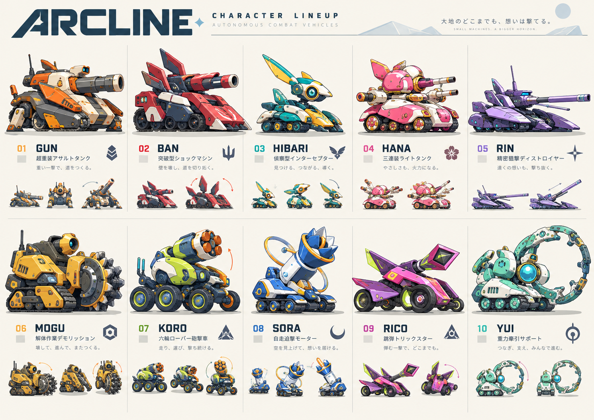
プレイヤー機・ラインアップ
深い輪郭、大きな塗装面、読みやすい機構。ここへ全体の密度を揃える。
ART DIRECTION / 2026.10.31
統一方針承認済み · ゲーム未反映
18枚の原本を照合し、重なる別案と表現の差を整理しました。
採用する基軸は「マットな精密2D重機」。形状・描き方・状態・ゲーム仕様の参照元を分けて設計します。
完全に同一の画像は0点。同じ対象の別案は複数あります。原本の名前・画素は保持し、ゲームコードは変更していません。
01 / DIRECTION
描き方はS01、機体の特徴はS02。環境と装置をつなぎ役にして、少数の面と共通の輪郭で一つの世界へ揃えます。統一方針は承認済みです。

深い輪郭、大きな塗装面、読みやすい機構。ここへ全体の密度を揃える。
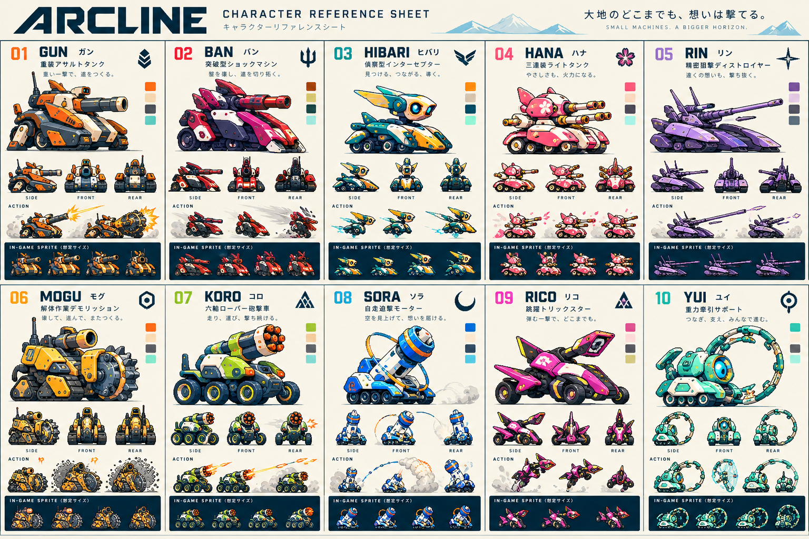
従来の10機の形と配色を保つ。S01の別形状へ一括交換しない。
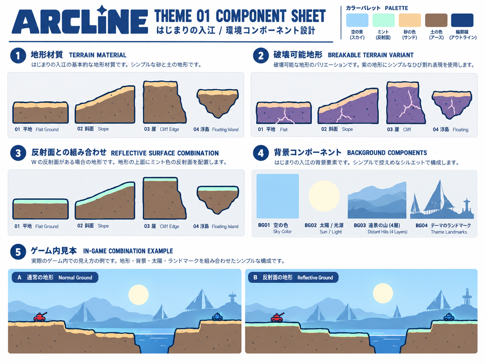
手前の材質と薄い遠景を分離。紫の破壊材、硬いミントの反射面。
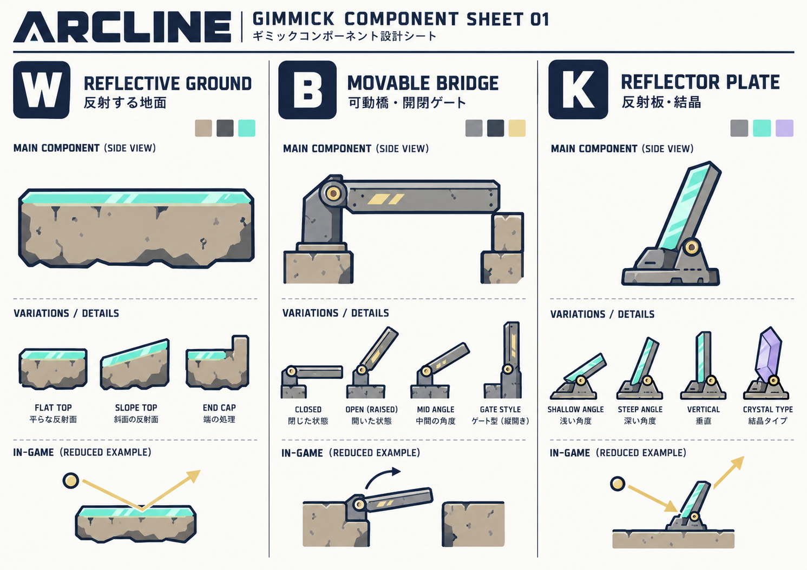
厚み・支点・台座で用途を示す。白い艶筋はマットな面へ。
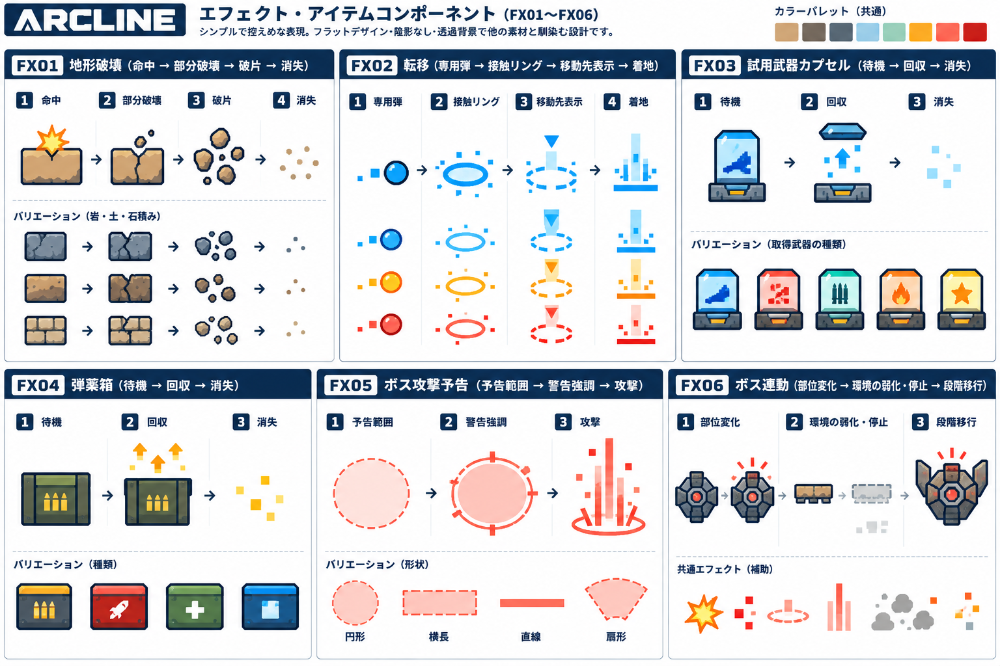
作用の順序と形を採る。拾得の仕様と横視点に合わせて変換。
| 対象 | 主資料 | 使い方 |
|---|---|---|
| 輪郭・面塗り・情報密度 | S01 | S01を表現の基軸にする。大きな面を先に読み、部品線は必要なところへ絞る。 |
| プレイヤー10機の形状・配色 | S02 | 従来参照してきたS02と現行の識別要素を保持。S01の別形状へ自動で切り替えず、艶・密度を変換する。 |
| 通常敵・中ボス・大ボスの姿 | S05 / S04 / S03 | それぞれ固有の機構を残す。通常敵の軍用写実感とボスの光沢を、共通の線と3階調へ揃える。 |
| 地形形状・材質・画面の階層 | S07 / S08 | S07は12形状の部品辞典、S08は見え方の基軸。全100面の配置を12テンプレートへ置き換えない。 |
| 20テーマの対応と色の補助 | S10 / S09 | テーマ名と面範囲はS10/現行データに従う。S09は素材パレットの補助。番号だけで対応付けない。 |
| 機械装置・領域・極性 | S12 / S13 / S14 | 機械はS12の構造密度、領域はS13/S14の淡い形。実際の作用と状態を共通の記号で表す。 |
| エフェクトの順序と形 | S16 / S15 | S16の簡潔な段階図を主に、S15の効果分解を補助に使う。俯瞰・ランダム武器・医療弾薬は採用しない。 |
| ボス連動の描き方 | S17 / S18 / S03 | S17/S18は状態変化の参考。面番号・機構・当たり判定の正仕様は、現行と今後の戦闘設計で別に確定する。 |
02 / VARIANTS
ファイルの重複削除では解決しない差があります。残す情報と採らない情報を、対象ごとに記録します。
D01 · S01 / S02
ヒバリの尖った頭部と丸いバイザー、ソラの開いた花弁状砲口と円筒、リコの後部構造などは別案。線・艶・細部も異なる。
統一案形状はS02/従来参照の特徴を保持。S01からは描き方を採る。正面・背面・主図を別案同士で混ぜない。
D02 · S06 / S07 / S08
平地・斜面・崖・浮島が重複。S07は山/谷/洞窟/庇/岩柱/窓/受け床を加え、S06の内部反射帯とS07/S08の上面帯が食い違う。
統一案部品の語彙はS07。材質の読みやすさはS08。Wは実際に反射する表面に密着させる。
D03 · S09 / S10 / S08
S09の12番は深海、現行/S10の12番は凍てつく峡谷。S09の1番は草原、S10ははじまりの入江。番号の意味が違う。
統一案S10/現行の名前・面範囲を正にする。S09は色や模様の候補であり、新テーマ追加やテーマ順の根拠にしない。
D04 · S11 / S12 / S06 / S07 / S08
反射面、支点、台座、草縁、白い艶筋の厚みが違う。S06ではWが地面内部の帯にも見える。
統一案機構はS12、地表との連続性はS08。Wの艶筋は少数のマットな斜線へ置き換える。
D05 · S11 / S13 / S14
弱/停止の扱い、矢印、透過の濃さが異なる。S11の横風停止例には上向き矢印もあり、Mの＋/−は単純な上/下に読める。
統一案種類ごとに一つの記号と状態セットへ。矢印の向きは実際の作用に従い、常に上/下と決めつけない。
D06 · S15 / S16
FX03は丸い？カプセルと台座付き透明カプセルの別案。FX04は弾種と回復を思わせる図が混在。S15には俯瞰例、S16には強い光点・角粒がある。
統一案FX番号だけで統合しない。S16の段階を採り、既存の浮遊・実弾回収・武器3発/弾薬+1/スキル+1に合わせる。
D07 · S03 / S15 / S16 / S17 / S18
アークハートの本体、汎用コア、肩部の鏡面などが同じ姿ではない。S17/S18には現行に無い昇降床・回転床・可変バリアもある。
統一案本体の形はS03。模式図は動き方の参考に限定。別のボス車体や新しい機能へ読み替えない。
03 / COMPARE
選択を変えると任意の2枚を比較できます。細部は「原本を開く」で拡大してください。シート全体を比率を保って表示します。
04 / INVENTORY
S01〜S18は資料の整理IDです。ゲームの面番号・テーマ番号・FX番号とは別に管理します。原本は高解像度のため遅延読み込みします。
18点を表示
原本台帳 JSON ↓S01 / 機体
10機・主外観・可動例
クリーム地に深い輪郭。丸みのある重機を硬い装甲面で描く。部品線と汚しはあるが、主形状が追いやすい。
使い方輪郭・面塗り・描画密度の基軸案。既存の機体形状を上書きする資料にはしない。
0885817F-97A8-459D-8966-34AA3669AF2E.png
SHA-256
2402e70234835c55b2fbab16781e740f1ead94b32abfd871ef554bec25adae89
S02 / 機体
10機・配色・三面図・動作・縮小例
S01と同じ10機。ヒバリ頭部、ソラ砲口、リコ後部などが別案。強い艶や細部、縮小例の粒立ちも目立つ。
使い方従来参照した10機の形状・配色・三面図・動作の主資料。艶や細線だけを共通規則へ。
95CB9F45-E52C-4228-9430-3FC587D53F94.png
SHA-256
755efc42465b8f69891c6b86526949189063e5cd109d02416b3a93170e8ccaaf
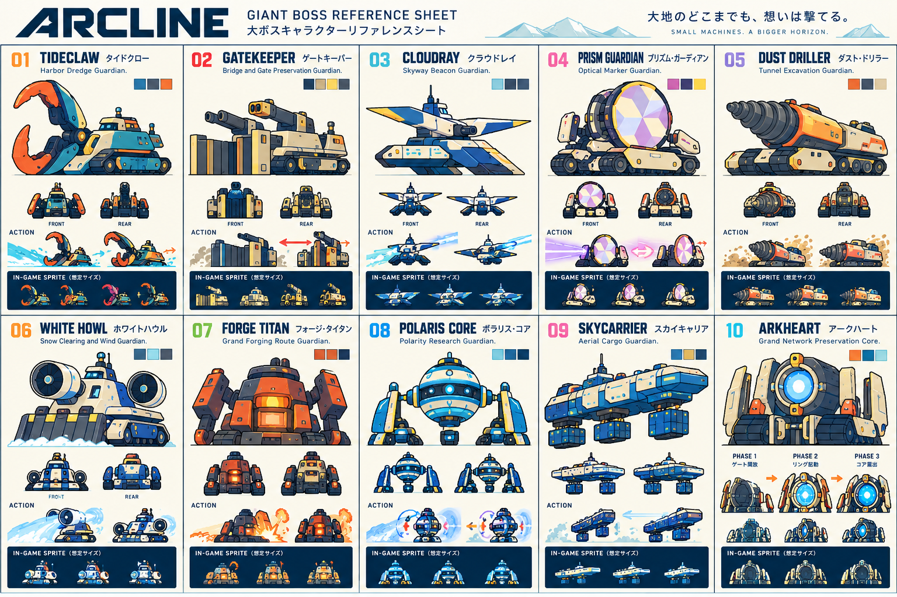
S03 / 機体
10体・正背面・動作・アークハート3形態
作業機能から異なるシルエットを作る。淡い黄土と青が多く、コアや反射面には光沢がある。
使い方大ボス固有の形状・構造の主資料。表面仕上げとコア表示を共通規則へ。
B4B8EF73-B773-4CF1-B7FC-97BBA5140165.png
SHA-256
89e60b38088d4570f07fb5a37a7238869a29a8c3ecc4d00bf46729d93f55a645
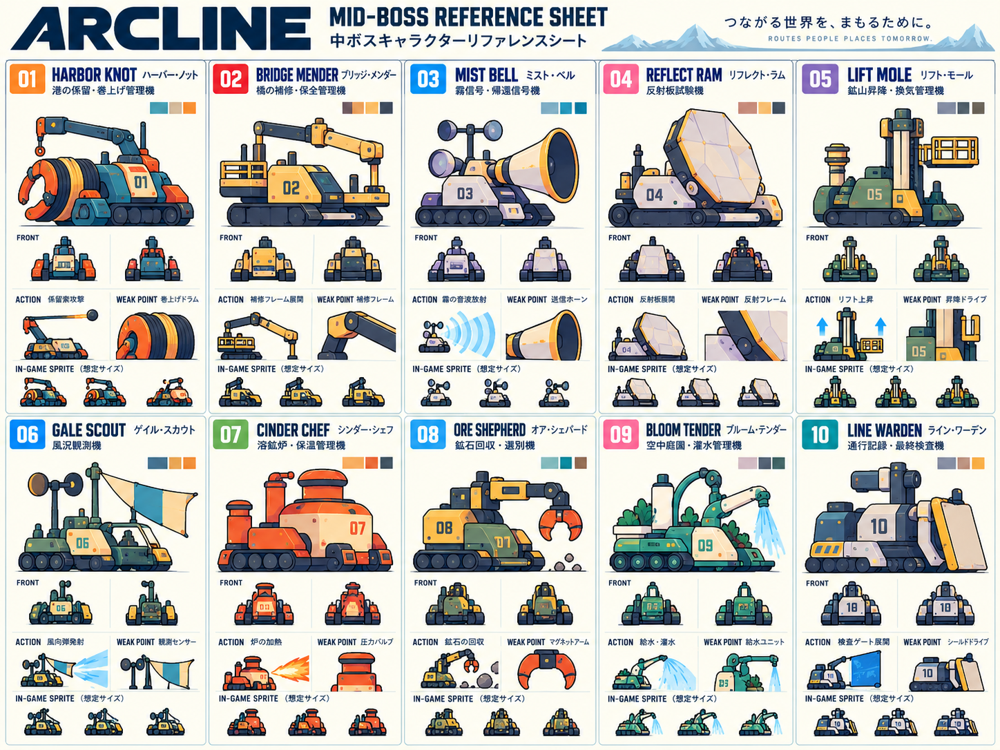
S04 / 機体
10体・作業装置・弱点・動作・縮小例
輪郭と面分けが比較的簡潔。巻上機・補修機・測候機など仕事が外形に出ている。
使い方中ボス固有形状の主資料。機械部品の線・塗りの橋渡し役。
F6583EC0-F22F-4A5A-8861-ECFF63F442E3.png
SHA-256
c6799d20a39c1af4afe10963c03d2633e3c97cc348a499ac07ec7e1a5c8fce1e
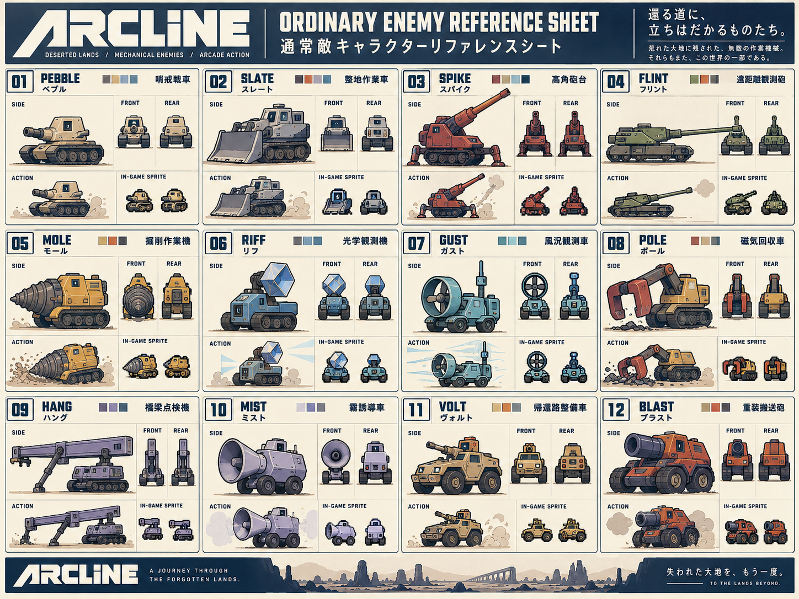
S05 / 機体
12種・側面/正背面・動作・縮小例
くすんだ軍用・作業車色、細い傷や粒状の陰影。自機より写実的で、縮小例はピクセル調。
使い方12のシルエットと役割を採用候補に。汚しと縮小描写は基軸へ変換。
B8EFC1B9-9938-40F3-A9BB-26D58CD8E7F7.png
SHA-256
4d6668b868893329f8723711adb6d6b36bd03dcb62c4e16a1ccb066f338f31ec
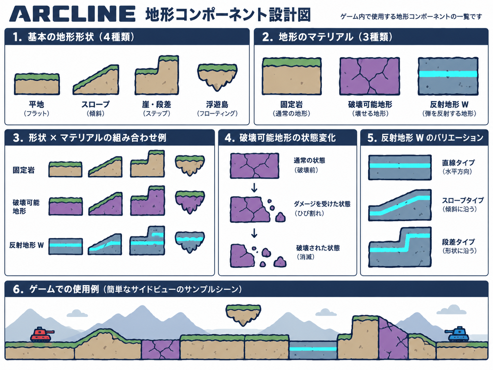
S06 / 地形
平地・斜面・崖/段差・浮島、3材質
太い輪郭と平坦な塗り。反射帯が地面内部を横切る図、下部に水に見える例がある。
使い方形状×材質の初期整理として残す。反射面の位置はS07/S08を優先。
92B9A592-F14B-4FC1-B1D5-82EFE078FE9D.png
SHA-256
df66ed4314f65289487ef5565d5bdbc73c79417fa0b98f99b44b075d838e9d4c
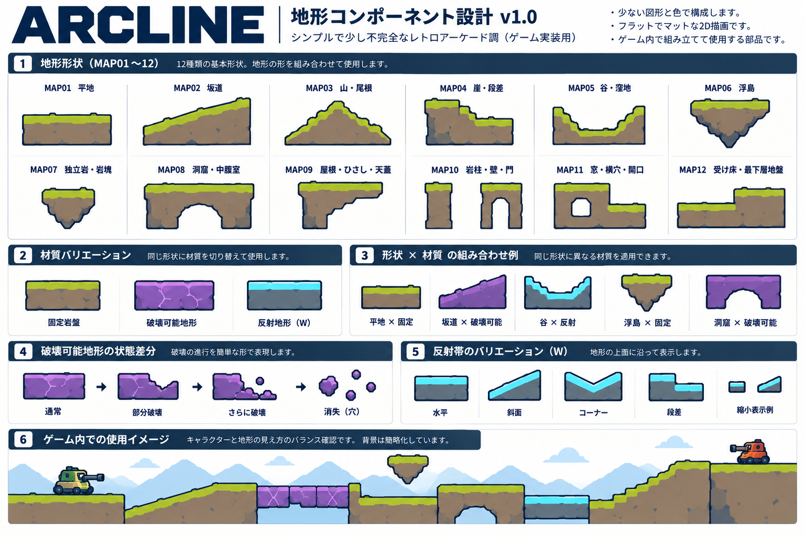
S07 / 地形
MAP01〜12、3材質、破壊差分、反射帯
山・谷・洞窟・庇・岩柱・窓・受け床まで拡張。紫片と草の緑が強く、段階破壊も描く。
使い方12形状の部品ライブラリー。100面の配置図や新耐久の確定仕様にはしない。
35E0AD91-82E9-4C89-A15A-3F5541EAF4B0.png
SHA-256
0de48397e99dd1c35274b450bed48cf04b8f1bab698090e88589e57a120a9935
S08 / テーマ
固定/破壊/反射の4形状、背景4層、画面例
砂と土、紫の破壊材、上面のミントが明確。薄い背景と濃い手前の分離が良い。水面のような溝も残る。
使い方環境の色階層・地形断面の基軸案。水のような反射面は硬い板へ整理。
E04D281A-DCC8-4878-9F28-161B22415983.png
SHA-256
4ffe232a32bbe83d2593eec98d153215808555186eff74cb4ea7cfb358c83d7b
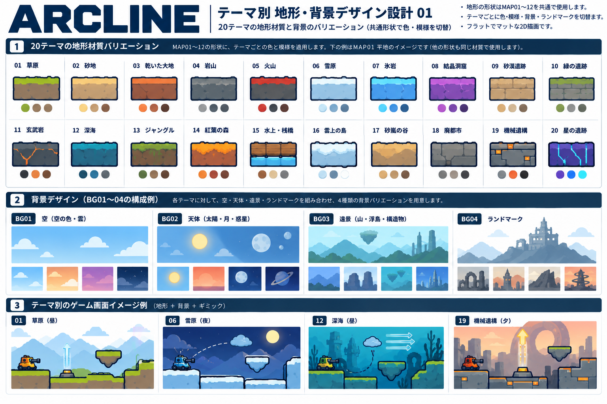
S09 / テーマ
草原〜星の遺跡20素材、BG01〜04
昼夜・深海・森林など豊かな色案。ただしテーマ番号/名称は現行キャンペーンの並びと異なる。
使い方色・模様・背景の素材辞典。番号をゲームのテーマIDへ直結させない。
4647E746-9C77-47EF-A93A-0F1EA27A935C.png
SHA-256
dacdd1ca657fa0637e404d3aeb9ee99d90e45bbfe683a3ab0b4b15d723ab1f07
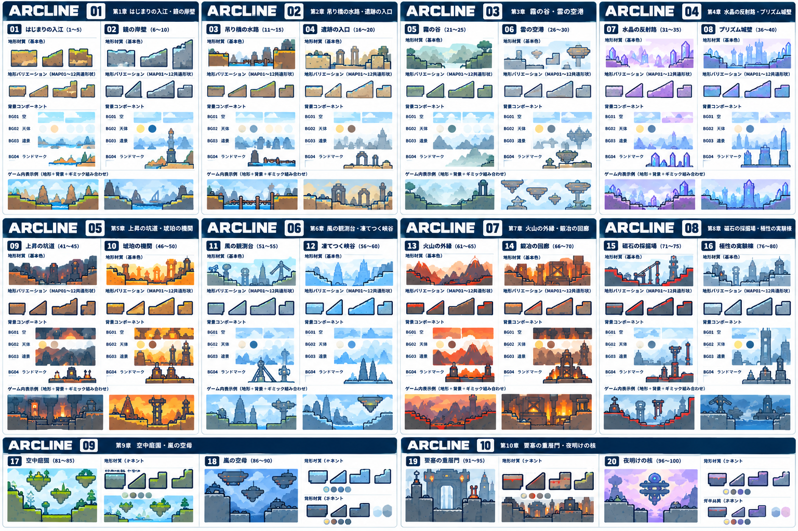
S10 / テーマ
1〜100面の20テーマを10章パネルへ集約
現行の章/テーマ名と範囲に沿う。山・町・工場の遠景は豊かだが、装飾と遊べる面の区別が必要。
使い方100面へ展開するテーマ対応の主資料。20の固定マップとしては使わない。
458992B1-BB92-4ADD-9865-64EB930AA483.png
SHA-256
67ca007b8ab3ce5ef06d369ed3f78a1761d51ffb44a0d1361e81cfe81ad13841
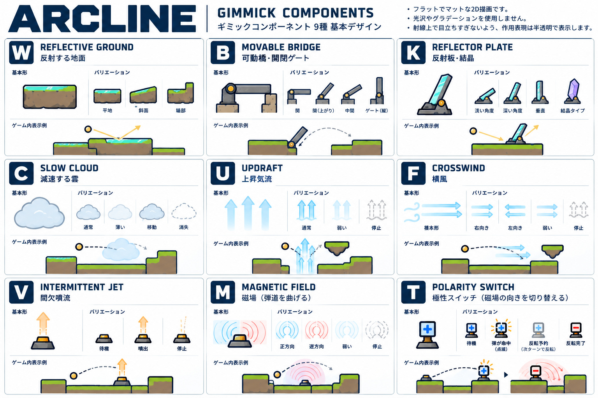
S11 / ギミック
W/B/K/C/U/F/V/M/T
共通記号と差分が一望できる。小さな例の線幅や矢印の向きに不揃いがあり、一部は簡略図。
使い方九種の意味と索引の主資料。ゲーム内では文字記号を必須にしない。
8DC067F1-6974-4BAE-A623-B8CF1CEBD5DB.png
SHA-256
47e0a22d6bab0b46824e4e158ef9d13d1a083911032f86fa2884bcf06b935bb5
S12 / ギミック
反射地面・可動橋/ゲート・反射板/結晶
構造・支点・厚みが明確で、輪郭と材質が機体に近い。反射面の白い艶筋は調整が必要。
使い方機械装置の描画密度・機構表現の基軸案。静的斜線へ置き換えてマット化。
5A5F2B38-9AC5-4982-8295-8109B9564781.png
SHA-256
6ebf72c084020528ef0fd25207a5831f322892027db767e4af6a5af9edba1c4b
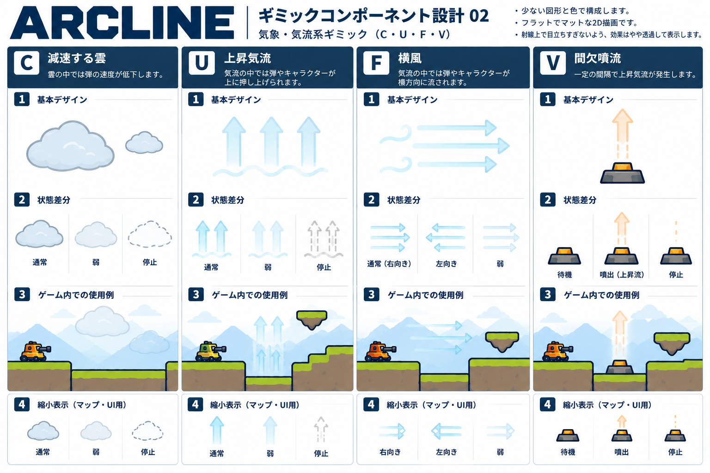
S13 / ギミック
減速雲・上昇気流・横風・間欠噴流
淡い半透明の矢印と雲。説明はキャラへの力も含むが、現行コードでは主に弾への作用。
使い方気流の形・方向・稼働状態を採用候補に。作用対象は現行仕様に合わせる。
A3A3CE98-BDED-4387-92B5-2491CF366146.png
SHA-256
d74e520c81c5a6022d7e94b4277a93b2dedaf7d18d338118e75250d3c58c3c44
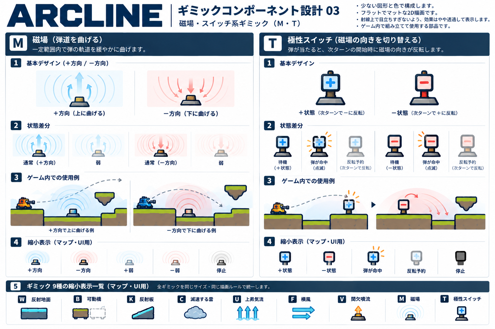
S14 / ギミック
磁場・極性スイッチ、方向/弱/停止、次ターン予約
青/赤と＋/−で極性を区別。上曲げ/下曲げの例は絶対的な力の向きと混同しやすい。
使い方磁場と予約表示の主資料。方向は実際の曲がり方に従い、医療マークと区別する。
2D52F20A-D97B-4709-A367-53B494BFD92A.png
SHA-256
db54fe6c4ac543e40904cd4b0a7b7ca24d659842e4a12c7d6b1ffdafee0e4bc7
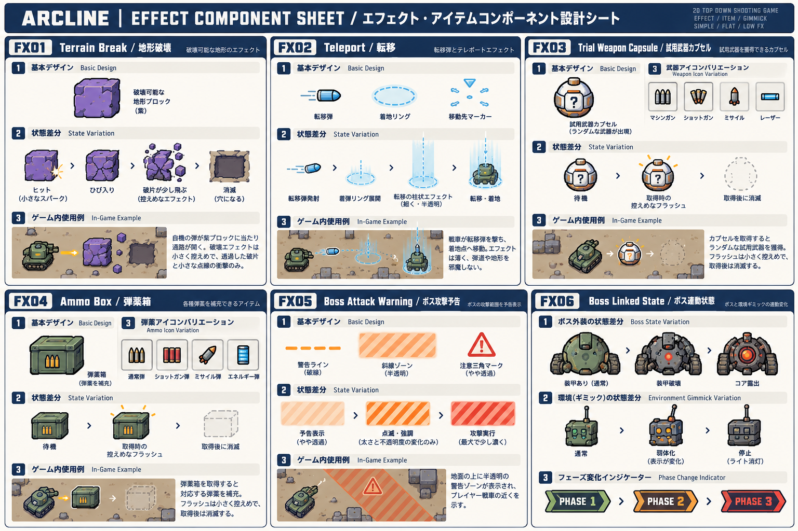
S15 / エフェクト
破壊・転移・試用武器・弾薬・警告・ボス連動
丸い？カプセル、艶、煙、PHASE札。図の一部が俯瞰視点で、現行の横視点と異なる。
使い方効果の分解と順序を参考にする別案。カプセル形と俯瞰視点をそのまま採用しない。
6E56AAD4-653E-4F16-B8CE-4EBB92A90825.png
SHA-256
44e9938554d70560c3c45f8c9cc69cebce424968601cc9b20563c0a4ddb3317a
S16 / エフェクト
同じ6系統、段階図、4種の警告範囲
輪郭と段階が簡潔。透明な台座カプセル、角粒、明るい光点、修理を思わせる弾薬箱もある。
使い方時間経過と形の基軸案。装置との誤認、ランダム武器、新しい回復弾薬は持ち込まない。
A4286A7E-B5B2-408C-BC80-A2A77DB4BC4C.png
SHA-256
58f1627afa1ebce7a0cb28e5a2a2714e17a0de101354ab501627744a7d01ab15
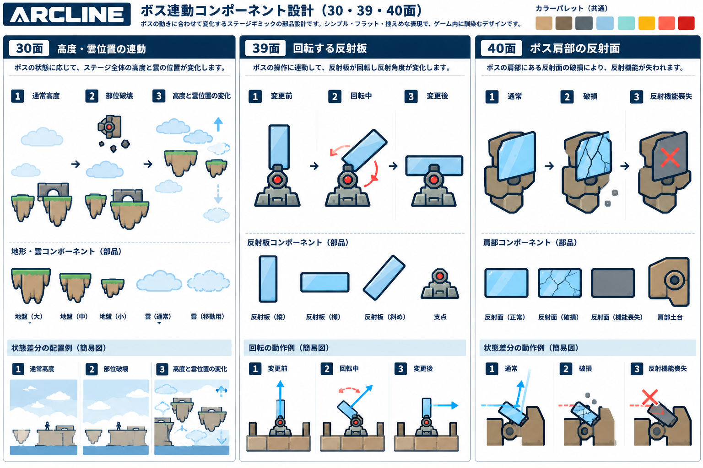
S17 / ボス連動
高度/雲、回転反射板、肩部反射面
状態差分が部品で読める一方、39面をボス連動と記載。肩装甲と鏡面の表現は大ボス図と差がある。
使い方連動の伝え方の参考。面番号と物理の変更は現行データと別途照合する。
A65A863C-2873-4504-AEC0-69EB6BF118E9.png
SHA-256
eb5670ae052fc4f5f397dbc30805e3d7f082b2e9241fc150160de8f1f03ad4de
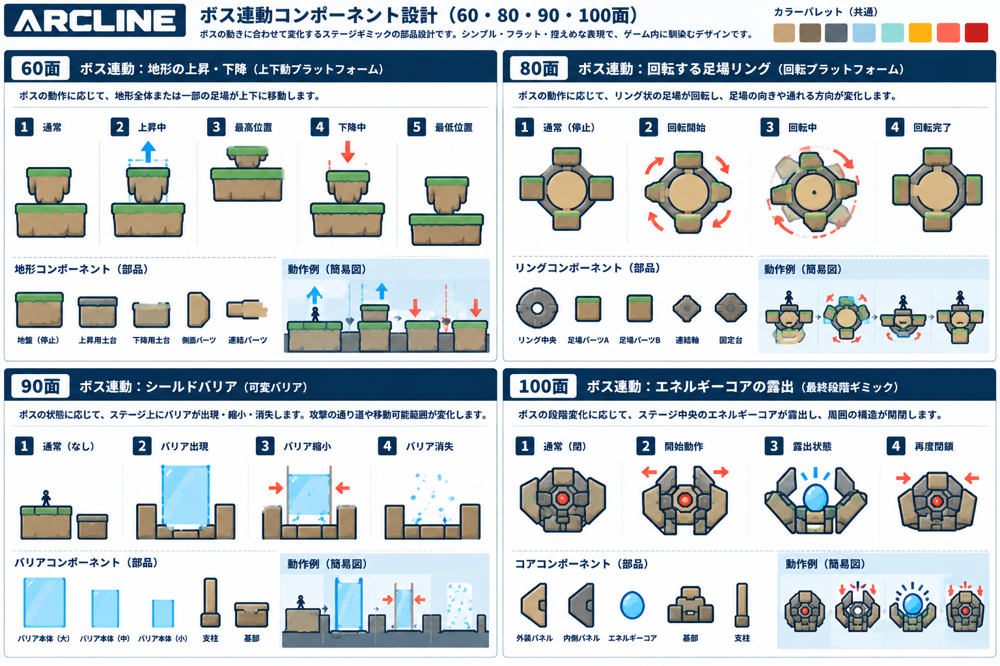
S18 / ボス連動
昇降床・回転足場・可変バリア・コア露出
パネル開閉や状態変化は明快。ただし現行の風/磁場/雲の連動と、別の機構が多く含まれる。
使い方開閉・露出・状態遷移の表現参考。新ギミックを美術変更として自動導入しない。
74CD7043-9A55-412E-BD1E-267BEC7B732F.png
SHA-256
9d3d33fd17fdefef0fb184f38babf44fe73312025c121235fe5a8fe08f85ff7c
機体5シート／地形2／テーマ3／ギミック4／FX2／ボス連動2。S10は一枚に10章20テーマを集約。42種の内訳は自機10・通常敵12・中ボス10・大ボス10で、ゲーム実装済みの数ではありません。
05 / COMMON LANGUAGE
色や仕事の個性を残し、線・陰影・材質・縮小・状態の示し方を揃えます。数値は実装前の初期案です。
#142E3B現行機体の輪郭色を継承#40525B現行機体の鋼材色を継承#EEE4CA現行機体のクリーム色を継承#8DDDD0設計案・非発光のミント#9774AF設計案・面の紫#D4B6E5設計案・壊せる手掛かり#F2B45F設計案・攻撃前の注意#E96A5E設計案・予告と形でも区別| 軸 | 現在の表現差 | 揃える基準 |
|---|---|---|
| 輪郭 | S01/S03/S04は機構を追える中程度の輪郭。S06/S07/S11は太く、S05は細い部品線が多い。 | 仕上がりの画面pxで外形と内部線を分ける。地形だけ太い漫画線、敵だけ細密画にしない。 |
| 面と陰影 | S01/S02/S05は曲面陰影と細かな傷が多い。地形や後期FXは平坦。 | 機体は基本色・明部・影の3階調。材質ごとに明暗幅を決め、柔らかい金属グラデーションを外す。 |
| 艶と発光 | 砲口・ガラス・コア、S12の鏡、S16の球体には白い照り返しがある。 | 塗装はマット。レンズ/コアは小面積の色面で示し、白いハイライトや広いブルームを常用しない。 |
| 汚しと描き込み | S05の軍用色・粒状感と、自機の鮮やかな塗装で世界が離れて見える。 | 色の役割差は残す。錆や傷は大きい少数の形に限定し、常時ノイズで密度を上げない。 |
| 縮小表現 | S02/S05のIN-GAME例はドット感が強い。地形・装置は滑らかな図形。 | ゲームはCanvas 2Dの精密パスへ統一。縮小時は細部を減らし、擬似ドットを重ねない。 |
| 色と世界 | S05は荒廃・軍用寄り、S09は深海/森林/宇宙まで含む一方、S10は現在の旅の20テーマ。 | 明るさと温かい塗装を共通にし、場所・役割で色を変える。全てを同じ茶色や青へ寄せない。 |
| 背景と領域 | 遠景の雲と減速雲、背景の水とW、装飾の結晶と反射板が似ている。 | 操作に関わるものへ輪郭・厚み・基部・状態差分を与え、背景は低コントラストにする。 |
| 図の視点 | 機体の主図は斜め、ゲーム例は横視点、S15は俯瞰。 | 戦闘は横視点＋浅い側面厚み。主図の俯角は展示用参考で、地形の見え方を変えない。 |
塗装は基本色・明部・影。全面の金属グラデーション、白い照り返し、常時ブルームを抑え、部品の構造で精密さを出します。レンズやコアの色は小面積へ。
展示・通常・遠距離で細部を切り替えます。外形は戦闘で1.5〜2 CSSpxを初期目安にし、ボルトより砲口・足回り・固有機構を優先。ドット模様は重ねません。
背景は淡く、固定地盤は塗りと断面、破壊材は紫と亀裂、Wは硬いミントの表面。Tは接地する装置、拾得物は浮遊するケースに揃えます。
命中・破壊・転移・予告は一つの形で読ませます。細粒や常時発光を増やさず、10機の必殺は物理イベントに沿った別の作用として見せます。
06 / GAMEPLAY CHECK
0.10.0のコードと照合した論点です。図の機構をそのまま移すと、遊び方まで変わる箇所があります。
確認したこと水面のような溝・波・青い面がある。現行Wは足場上の反射面。
方針水の物理は追加しない。硬いミント色の面を実コリジョンの表面へ。水を描く場合は非操作の遠景へ。
確認したこと現行は破壊可能ポリゴンを部品へ分割し、命中した部品が消える。
方針破片や亀裂は実際の破壊イベントへ接続。段階耐久や残って見える透明壁を美術の都合で追加しない。
確認したこと現行C/U/F/V/Mの領域処理は弾の速度・加速度・曲がりを変える。
方針キャラを浮かす/流す動作は別機能として保留。今は弾へ作用することを表示。
確認したこと現行Mは速度ベクトルを回転させる。飛ぶ方向によって曲がる見え方は違う。
方針＋/−と曲線方向を併用。絶対上下を保証する案内にしない。
確認したこと現行は命中で予約し、手番境界で反映する。
方針命中・予約・確定の三表示を分離。命中直後に場の向きだけ先行変更しない。
確認したこと？やランダム武器、通常弾・回復を思わせる箱が混在する。
方針既知の武器アイコン＋3目盛り。弾薬は有限の補助弾+1。修理はスキルとして別記号。回収は自弾通過のみ。
確認したこと両方が四角い表示器＋台座に見える。
方針装置は接地・配線・支点を持つ。拾得物は浮遊する独立ケース。＋/−、盾、工具、弾を別シルエットへ。
確認したこと現行39面は通常面、反射板Kは存在する。
方針回転板の見え方だけ参照。ボスを39面へ移動したり追加したりしない。
確認したこと現行60面は風の向き・強さの変化が中心。
方針床の昇降は新機能案として保留。風停止と、壊した部位の見た目を先に一致させる。
確認したこと現行80面は部位破壊で磁場が弱まり、停止する。
方針足場回転と磁場の弱化を混同しない。新しい足場機構は別設計。
確認したこと現行90面は高度と雲の状態変更を扱う。
方針透明な壁を新しく置かない。雲・高度・部位の変化を別の合図で見せる。
確認したこと画像には開閉反復もあるが、現行はHPに応じた3段階。
方針部位/コアの見え方を段階に結び付ける。無敵待ち、回復、閉鎖でのダメージ無効を増やさない。
確認したこと掘削、音波、回収などの動作例は、12通常敵や20ボスの実装済み攻撃を意味しない。
方針見た目の登録と、AI/攻撃/当たり判定の実装を別タスクにする。固定地形を壊すなどの能力を推測しない。
確認したことMAP/FX/章番号は用途が異なる。S04には見出しと車体番号の違いも見られる。
方針正式IDをデータ側で管理し、日本語ラベルはコード描画。シートのロゴ・説明・誤字をゲーム画像へ焼き込まない。
100面の新配置、42機種の判定寸法・攻撃仕様、新しい床やバリア、スキルの追加美術は、原画だけでは確定しません。別の設計として解決します。
07 / ROLLOUT
今回作成したのは資料と計画までです。次の3画面をコード描画した見本で確認し、表現を固定してから展開します。
次段階の見本 / 未作成
ガン＋ペブル、固定地盤/紫の破壊材/ミントの反射面、浮遊補給箱。
自機と敵の同じ描画密度、材質の識別、箱が装置に見えないこと。
次段階の見本 / 未作成
ハーバー・ノットの主形状、W/B/K、紫の天井、開いた通路。
輪郭・支持面・支点・弱点の分離。地形に埋まるキャラや見えない壁を出さないこと。
次段階の見本 / 未作成
ユイ/ポラリスの大きさ、M/T、転移、予告と露出の状態見本。
暗所と半透明領域でも弾が追え、＋/−と修理の印が混同されないこと。
今回作成
18原本の照合、重複比較、形状/描き方/仕様の参照元、変更対象一覧。
完了条件：本資料の統一案を確認する。原本の置換やアプリ変更はない。
未着手
入江の自機/通常敵/3材質、洞窟とW/B/K、暗所のM/T/ボス/警告をコード描画した比較。
完了条件：縮小表示・材質・機体の特徴・当たり判定との対応を目視確認して基準を固定。
未着手
線幅・階調・装甲/履帯/支点・素材・記号・状態・描画レイヤーと負荷制御。
完了条件：Canvasパスが描画専用で、物理座標を唯一の接点にする。
未着手
自機の識別要素を保ち、12敵の外観を同じ手法で描き分ける。
完了条件：姿だけで新しい敵能力やHP差を導入しない。展示/実戦の同一個体を確認。
未着手
12形状の辞典を元に既存100面のポリゴンへ材質を適用。20テーマをS10対応へ。
完了条件：描画と支持/衝突/破壊位置が一致。新形状は100面の攻略経路と別途検証。
未着手
浮遊箱と接地装置を分離。物理イベントに同期した破壊・転移・予告・結果を描く。
完了条件：箱の意味、残数、視認性を維持。大きな演出で弾道と敵を隠さない。
未着手
まずハーバー・ノット/タイドクローで外観・弱点・停止状態を完成。その後へ展開。
完了条件：機構/AI/攻撃/弱点は別の戦闘仕様と照合。39/60/80/90/100の相違を解決する。
未着手
全10機、3難易度、20テーマ、全ボス段階、無在庫経路、回転/ズーム/低モーション/保存。
完了条件：旧在庫・進行を保持し、実機でサイズ・負荷・操作を確認して公開。
確認済み：18原本、全内容、別案、トンマナ差、現行コードとの主要な不一致。原本のハッシュと今回のゲーム未変更を照合します。
未実施：統一後の新しい描画、代表3画面、全100面への反映、新しい敵・ボス・機構の実装。
未確認：実機のサイズ・負荷・操作感、新設計での全機体攻略。原画の確認を実装や実機の合格とは扱いません。
承認済み方針を、8バッチ・24タスクのゲーム反映計画へ具体化しました。
Markdown/JSONは単体で保存できます。この閲覧ページは同じフォルダー内の原本画像とCSS/JSを参照します。